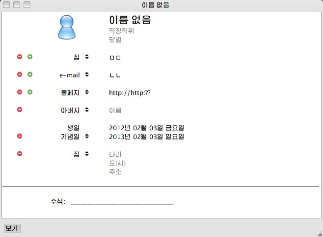
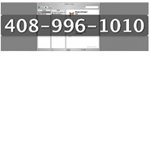

주소록 살펴보기
주소록은 자신의 카드정보를 유연하고 편리하게 저장할수 있는 방법을 제공합니다.
주소록을 설정하기 |
|
 |
주소록 카드에 쉽게 카드정보를 입력할수 있습니다. 필요한만큼 주소, 전화번호 및 전자우편마당을 추가하고 요구하는대로 표식을 사용자화할수 있습니다. 카드의 그룹을 생성하고 망서류철에 접근할수 있습니다. 다른 응용프로그람에 이미 존재하는 카드의 정보가 있다면 vCards, LDIF 파일 및 태브로 분리되거나 분할기호로 분리된(CSV) 본문파일을 반입하여 주소록에서 해당 정보를 사용할수 있습니다. |
주소록 사용하기 |
|
 |
새로운 탐색기능을 통해 요구하는 정보를 빨리 찾을수 있습니다. 새로운 스마트그룹의 기능을 사용하여 자동으로 갱신되는 그룹을 생성할수 있습니다. |
효과적인 기능 |
|
 |
생일을 놓치지 않고 관리할수 있습니다. |